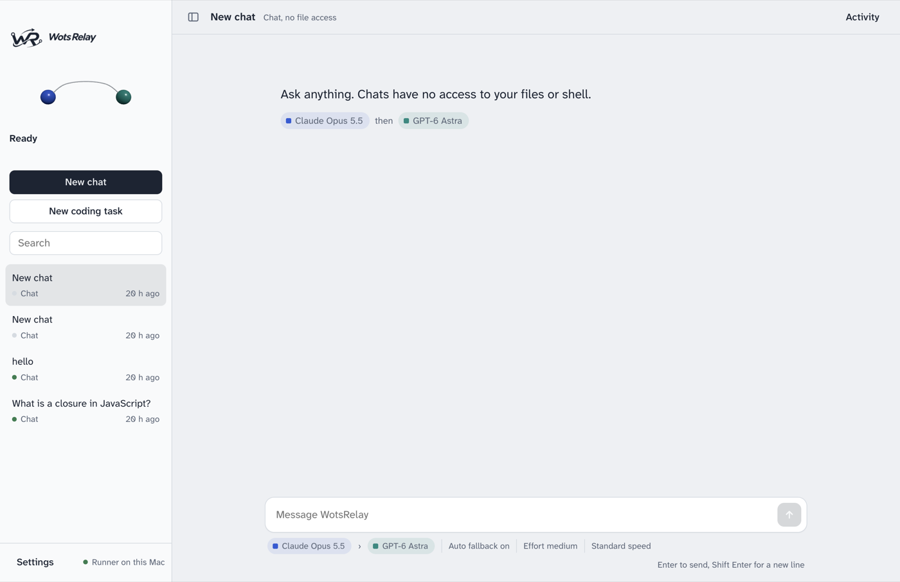
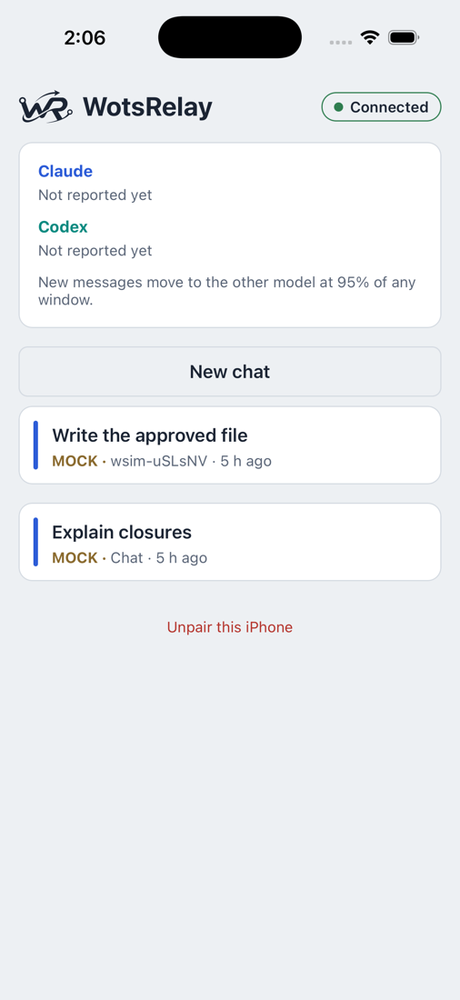
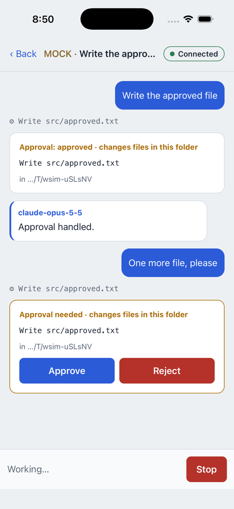
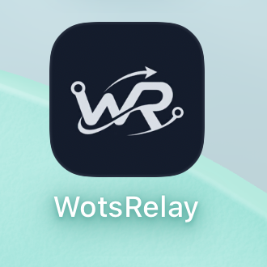

One workspace across Claude Code and Codex, on your Mac, your terminal and your iPhone.
Version 0.1 · November 2026
WotsRelay lets you work with Claude and Codex as if they were one assistant. You talk to it like you would to claude or codex in a terminal, and when one provider is about to run out of its usage limit, the conversation continues on the other one, with everything it needs to pick up where it left off.
claude and codex tools you’re already signed into. It never asks for or stores your passwords.| You need | Check with |
|---|---|
| A Mac with Apple silicon | — |
| Node.js 26 or newer and pnpm 11 | node --version · pnpm --version |
| Claude Code, signed in | claude auth status (sign in with claude auth login) |
| Codex CLI, signed in | codex login status (sign in with codex login) |
| For the iPhone app: Xcode | Only needed to build the app yourself |
wots on your PATH so you can run it from any folder. Run this from inside the project folder:
command not found: wots, add ~/.local/bin to your PATH once:
auth=authenticated and billing=subscription.wots doctor warns about variables such as ANTHROPIC_API_KEY or OPENAI_API_KEY, those would make the tools bill an API account instead of your subscription. WotsRelay refuses to run a provider while such a variable is set, unless you deliberately allow API billing.Open a terminal inside the project folder you want to work on and type:
The first time in a folder, WotsRelay asks whether you trust it. Use the arrow keys and Enter:
Then you see the session banner and a prompt:
Type what you want and press Enter. The reply streams in, labelled with the model that wrote it, and you can keep the conversation going: follow-up messages remember everything said so far.
wots "fix the failing test" opens the session and sends that message straight away. Piped input runs once and exits: echo "summarize README.md" | wots.| Type | What it does |
|---|---|
/model | Pick any Claude or Codex model with the arrow keys. The other provider stays as the fallback, and your choice is saved as the default. |
/model gpt-6-astra | Switch directly to a named model. |
/new (or /clear) | Start a fresh conversation. |
/resume | Pick an earlier conversation in this folder and continue it. |
/status | Current model, fallback, folder access, sign-in, and usage bars for each provider. |
/help | List these commands. |
/exit | Quit. Ctrl-D, or Ctrl-C twice on an empty prompt, also quits. |
| Key | What it does |
|---|---|
| Ctrl-C while a reply runs | Stops that reply. You stay in the session. |
| Ctrl-C on an empty prompt | Shows “press Ctrl-C again to exit”; press it again to quit. |
| ↑ / ↓ at the prompt | Recall earlier messages. |
When a model wants to do something that needs your permission, WotsRelay shows it in plain words and asks:
| Risk shown | Meaning |
|---|---|
| only reads | Looks at files or status without changing anything. |
| changes files in this folder | Creates or edits files inside your project. |
| reaches outside this folder | Network access, deleting files, installing packages, pushing to git or changing the system. |
| not recognised | WotsRelay can’t tell what the command does. Read it before approving. |
“Approve for this session” is offered only when the provider supports it (Codex commands).
Type /model in a session. Claude models: Opus 5.5 (default), Sonnet 5.5, Haiku 5.5. Codex models: the list your ChatGPT plan offers, including GPT-6 Astra. The model you pick goes first; the other provider stays as the fallback.
Claude and Codex both report how much of their 5-hour and weekly limits you’ve used. WotsRelay watches those numbers:
| Command | What it does |
|---|---|
/status or wots usage | Usage per provider and window, with reset times. |
wots fallback threshold 90 | Switch at 90% instead of 95% (allowed range 50–100). |
wots fallback show | Current order, effort and whether automatic fallback is on. |
wots fallback set claude-opus-5-5 gpt-6-astra | Set the order of models directly. |
Sometimes a reply can’t continue on its own, for example when a provider actually hits its limit, loses its connection, or needs you to sign in again. Instead of failing, WotsRelay saves a checkpoint and asks what to do:
/resume, from the desktop app or from your iPhone.The desktop app shows the same sessions as the terminal, with the relay status, a conversation view and an activity panel. It is currently a development build that you start from the project folder:

The iPhone app lets you follow sessions, answer approvals and continue paused work while you’re away from your desk. The work itself still runs on your Mac, so the Mac must be awake.
Installing it on a physical iPhone needs your Apple developer signing set up in Xcode.
wots gateway enablewots gateway pair. It’s valid for 2 minutes and works once.


Everything you can do outside an interactive session. Add --json before a command for machine-readable output, for example wots --json sessions.
| Command | What it does |
|---|---|
wots | Interactive session in the current folder. |
wots doctor | Tool versions, sign-in, billing route and runner state. |
wots setup | Guided check, plus permission to continue chats on the other provider. |
wots chat "…" | One chat message with no file access. |
wots code --project <path> "…" | One coding task in a project folder. Add --consent to allow handing it to the other provider. |
wots sessions | List sessions. |
wots resume <id> [--fallback] | Resume a paused session, optionally on the next model. |
wots approve <id> --version <n> [--session] | Approve a pending action (wots reject … rejects). |
wots models · wots connections | Known models; provider connection status. |
wots usage | Usage per provider and window. |
wots fallback show | set | threshold | See or change the model order and the switch point. |
wots export <id> [--format json] | Export a session as Markdown or JSON (secrets redacted). |
wots gateway enable | pair | status | disable | Phone access. |
wots devices list | revoke <id> | Paired phones. |
wots runner status | start | stop | The background runner. |
Exit codes for scripts: 0 completed, 10 paused, 1 failed, 130 cancelled, 3 runner unavailable.
~/Library/Application Support/WotsRelay, readable only by your user account.claude and codex tools. WotsRelay never reads their credential files..env, keys and certificates are never sent to the other provider, and known secret formats (API keys, tokens, private keys) are blanked out of anything that is.| Problem | What to do |
|---|---|
command not found: wots | Repeat step 2 of the installation from inside the project folder, then run rehash or open a new terminal tab. |
| A provider shows as signed out | Sign in with claude auth login or codex login, then choose Retry in the pause menu. |
| “Runner did not start” | Run wots runner status; the message points to logs/runner.log. A very long custom WOTS_HOME path can be too long for macOS sockets. |
| The phone says “Reconnecting…” | Check the Mac is awake and on the same network (or VPN), and that wots gateway status shows it listening. |
| “This pairing link was already used or has expired” | Links last 2 minutes and work once. Run wots gateway pair again. |
| The phone says it was unpaired | It was revoked on the Mac. Pair it again with a new link. |
| The model didn’t switch at 95% | It switches on your next message, never mid-reply. If you haven’t allowed sharing the conversation yet, WotsRelay asks first. |
| Something looks wrong | wots doctor shows versions, sign-in and billing without revealing any secrets. |
These are being built now and are not available yet:
| Feature | Status |
|---|---|
| Cursor as a third provider | in progress The connection to Cursor’s command-line tool is written and tested against its published format; it becomes selectable once the provider settings commands land and it has been checked with a real Cursor account. |
| Gemini as a fourth provider | in progress Through Google’s official Gemini API with your own API key (billed by Google per use, separately from any Gemini subscription). |
| Antigravity | in progress Detection and a button to open it in its own Terminal window. Google’s terms don’t allow other apps to drive it, so WotsRelay will never automate it. |
Provider settings page and wots providers | in progress Enable, disable and reorder providers; inspect each handoff. |
| QR pairing and notifications on the iPhone | planned |
| A signed, installable Mac app | planned Needs Apple developer signing. |